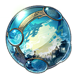
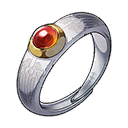
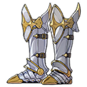

추천 광추
언제나 여정이 평탄하기를
실드량 +24% · 아군 피해 +20%
효과 자세히
아군이 실드를 보유하는 동안 피해 증가. 실드가 걸린 아군만 피해 증가.
언제나 불공평한 운명
방어력 +40% · 반격 취약
효과 자세히
실드 제공 → 본인 치피 +40% 2턴. 추가 공격 적중 → 기본 확률 100%, 적 받는 피해 +10% 2턴. 특성 반격으로 취약 부여.
여생의 첫날
방어력 +24% · 팀 속성 저항 +12%
효과 자세히
전투 진입 후 팀 속성 저항 증가. 같은 유형은 중복 적용되지 않음.
승리의 순간
방어력·효과 명중 +24%
효과 자세히
피격 확률 증가 · 피격 후 자신의 턴 종료까지 방어력 +24% 추가.
추천 유물
별빛에 숨은 은둔자 4 · 부러진 용골 2
- 머리
 주옵션HP부옵션속도 · 방어력% · 효과 저항 · 효과 명중
주옵션HP부옵션속도 · 방어력% · 효과 저항 · 효과 명중 - 손
 주옵션공격력부옵션속도 · 방어력% · 효과 저항 · 효과 명중
주옵션공격력부옵션속도 · 방어력% · 효과 저항 · 효과 명중 - 몸통
 주옵션방어력%부옵션속도 · 효과 저항 · 효과 명중
주옵션방어력%부옵션속도 · 효과 저항 · 효과 명중 - 다리
 주옵션속도부옵션방어력% · 효과 저항 · 효과 명중
주옵션속도부옵션방어력% · 효과 저항 · 효과 명중 - 구체

주옵션방어력%부옵션속도 · 효과 저항 · 효과 명중 - 매듭
 주옵션에너지 회복효율부옵션속도 · 방어력% · 효과 저항 · 효과 명중
주옵션에너지 회복효율부옵션속도 · 방어력% · 효과 저항 · 효과 명중
이 조합을 추천하는 이유
은둔자 제공 실드량 합계 +22% · 실드 보유 아군 치피 +15%. 용골 효저 30% → 파티 치피 +10%.
정토 교황의 팔라딘 4 · 축성가의 벨로보그 2
- 머리
 주옵션HP부옵션속도 · 방어력% · 효과 명중 · 효과 저항
주옵션HP부옵션속도 · 방어력% · 효과 명중 · 효과 저항 - 손

주옵션공격력부옵션속도 · 방어력% · 효과 명중 · 효과 저항 - 몸통
 주옵션방어력% / 효과 명중부옵션속도 · 방어력% (주옵션 제외) · 효과 명중 (주옵션 제외) · 효과 저항
주옵션방어력% / 효과 명중부옵션속도 · 방어력% (주옵션 제외) · 효과 명중 (주옵션 제외) · 효과 저항 - 다리

주옵션속도부옵션방어력% · 효과 명중 · 효과 저항 - 구체
 주옵션방어력%부옵션속도 · 효과 명중 · 효과 저항
주옵션방어력%부옵션속도 · 효과 명중 · 효과 저항 - 매듭
 주옵션에너지 회복효율부옵션속도 · 방어력% · 효과 명중 · 효과 저항
주옵션에너지 회복효율부옵션속도 · 방어력% · 효과 명중 · 효과 저항
이 조합을 추천하는 이유
팔라딘 방어력 +15% · 실드량 +20%. 효과 명중 50% → 벨로보그 방어력 +15% 추가.
이 정도면 잘 키웠다
동일 파티·광추 기준 · 조건 [*]
| 스탯 | 추천 스탯 | 준종결 | 종결 |
|---|---|---|---|
| 속도 [*] 마을 속도. 실드와 정화를 자주 쓰는 목표. | 134 | 143 | 160 |
| 방어력 [*] 빙결형은 방어력 1,800~2,200+와 효과 명중 몸통으로 조율. | 실드형 2,800+ | 실드형 3,100+ | 실드형 3,400+ |
| 효과 명중 [*] 빙결형 마을 목표. 실제 빙결 성공률은 적의 효과 저항과 빙결 저항에 따름. | 빙결형 64% | 빙결형 80% | 빙결형 92% |
육성 단계의 기준
캐릭터·광추 Lv.80 · 5성 유물 +15. 발동 조건은 명시한 수치, 그 외는 육성 목표.
성혼과 추천 돌파
4돌 반격 횟수 증가 · 6돌 스킬 실드에 회복 추가.
1빙결 적당 에너지 +6pt
필살기로 빙결한 적 1기당 에너지 6pt 회복.
2전투 시작 시 아군 1인 실드
HP 비율 최저의 아군에게 방어력 24%+320 실드 3턴.
3필살기 +2 · 일반 공격 +1
필살기·일반 공격 레벨 상한 각각 15·10.
4반격 +1회 · 피해 증가추천
턴당 반격 한도 +1회 · 반격 피해에 방어력 30% 추가.
5전투 스킬·특성 +2
스킬·특성 레벨 상한 각각 15.
6스킬 실드 아군 턴 시작 시 회복추천
각자 HP 최대치 4%+106 회복.
추천 파티


기본 운영과 행적
실드 대상을 먼저 정하기
전투 스킬로 피격 위험이 큰 아군 보호 → 실드 아군 피격 시 반격.
- 대상 HP 30% 이상이면 피격 확률 증가. 승급 2단계 해금 후 스킬로 대상 디버프 1개 해제.
행적 육성 순서
전투 스킬 → 필살기·특성 → 일반 공격
- 정화와 실드 지속 시간 행적부터 해금.
기준과 출처 · 2026-11-25
4.7 데이터 · Prydwen 장비 참고 · 자료실 편성 예시